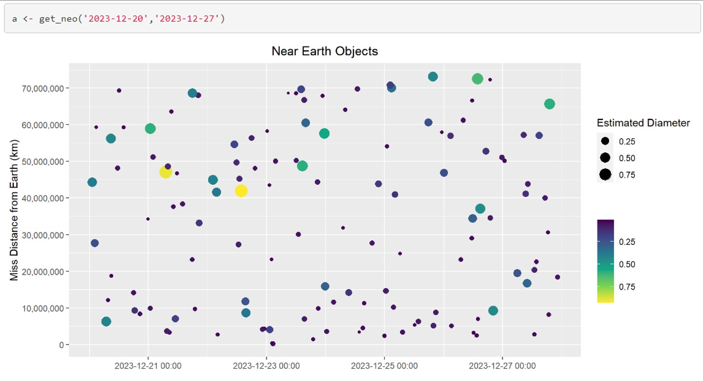

Chicago Bike Sharing Dash Application
App Link
Github Project Repo
The following project is a dashboard created using Python Dash, and deployed on Heroku. The goal is to help visualize the ride data to help business stakeholders answer key decisions including:
- What stations are the most popular?
- When are they popular?
- Are there particular stations that customers usually start their rides at and end at?
- What is the bike availability at "hot" stations, how can we better re-shuffle bike inventory to maximize bike availability at stations?
Challenges:
The biggest challenge with the project was dealing with 1 year's worth of data (more than 3 million rows). Some techniques used to reduce the memory load included pre-calculating metrics for plotting, multi-indexing, and storing data as parquet files for efficient storage. In addition, with Heroku deployment, storing files on GitHub in LFS format, and reading them directly helped speed up app deployment. However, ultimately, due to the sheer size, rather than using 1 years worth of data, a reduced amount of 4 months had to be used to stay under the Heroku 512mb memory limit to prevent the app from crashing.
For the improved application, I decided it was more important to view all data rather than having a "fancy" date selector. As a result, even though more than 5 million rows of data was used, due to efficient pre-processing, less memory was needed and the app was successfully launched with an improved UI.
NASA API R Wrapper
Github Project Repo
How vast and amazing is space? This project was meant to bring us a little closer to space by creating an R package to wrap 3 NASA APIs:
-
Near Earth Objects - NEO API
This function will let the user search for NEO’s based on start/end date and give asteroid specific information.
-
Earth Polychromatic Imaging Camera - EPIC API
This function will allow the user to request images and metadata from the daily imagery collected by DSCOVR's Earth Polychromatic Imaging Camera (EPIC) instrument.
-
NASA Rover Images API
This wrapper function will allow the user to request a photo from one of the three NASA rovers on Mars.

US Health Insurance Charges Analysis
Project Analysis
The goal of this analysis was to identify the best model to predict customer health insurance charges based on age, sex, BMI, # of children, smoker status, and region. The data set was split into 2/3 for training and 1/3 for testing. A Linear, Lasso, Tree, Random Forest and Boosted models were fit on the data. Based on the test MSE, the boosted model had the lowest error, however, the random forest had a lower cross-validated MSE estimate. Additional analysis should be done with a larger test set, in order to determine if the random forest or boosted model should be used in order to attain the highest prediction accuracy.
Golf Companion Python Package (Deployed to PyPi)
Github Project Repo
PyPi Documentation
Created and deployed a golf tracking python package. The package has 1 main function used to play a round of golf, which includes picking a preset golf course or uploading your own golf course scorecard, adding players to a round, tracking the score for each player, and assisting players in picking the right club based on target yardage and player skill. The package also has 2 independent sub-packages which can be called independently of the main function, the first being to simply track score, and the second is recommending a club based on the player profile and target yardage.
Continuous integration and deployment was implemented using Travis CI, a test suit with several test functions that is executed automatically every time a new commit occurs, and the changes are only merged to main if all tests pass successfully.
Fully Autonomous Can Sorting Machine
 This was a fully autonomous can sorting machine which my two teammates and I had built for a design course, AER201, in our 2nd year. The goal of the project was to sort four types of cans; aluminum pop can with tab, aluminum pop can without tab, tin soup can with label and tin soup can without label. Twelve assorted cans had to be sorted within three minutes. The first step in the cycle was for the "claw" to pick up a single can from the hopper and drop it into our "sensing channel". Here, we used a magnetic switch to determine if the can in the channel was a tin or aluminum can. If it was determined to be an aluminum can, we then used a carefully calibrated laser sensor to check if there was a tab on the aluminum can or not. It did not matter if the can was inverted or not because even if it was, the can stood a little taller because of the tab, which was then picked up by the laser sensor. If the can was determined to be a tin can, then we used a colour sensor to check if the can had a label or not. Once the type of can was determined, we used a ramp on a servo to guide the can into the correct bin. This cycle was repeated until all the cans were sorted.
This was a fully autonomous can sorting machine which my two teammates and I had built for a design course, AER201, in our 2nd year. The goal of the project was to sort four types of cans; aluminum pop can with tab, aluminum pop can without tab, tin soup can with label and tin soup can without label. Twelve assorted cans had to be sorted within three minutes. The first step in the cycle was for the "claw" to pick up a single can from the hopper and drop it into our "sensing channel". Here, we used a magnetic switch to determine if the can in the channel was a tin or aluminum can. If it was determined to be an aluminum can, we then used a carefully calibrated laser sensor to check if there was a tab on the aluminum can or not. It did not matter if the can was inverted or not because even if it was, the can stood a little taller because of the tab, which was then picked up by the laser sensor. If the can was determined to be a tin can, then we used a colour sensor to check if the can had a label or not. Once the type of can was determined, we used a ramp on a servo to guide the can into the correct bin. This cycle was repeated until all the cans were sorted.
Lifeguard Chair & Honey Bottling
This project was done in my first year for a design course called Praxis II. The project for this course was broken up into two parts. This first part, my team and I had to go into the downtown community, approach local establishments and try to identify a problem they may be encountering. We then had to take our findings and write a request for proposal (RFP) which outlined the objectives, stakeholders and requirements. The second part, we were given a problem and we had make a solution and present it during a showcase.
 For the first part of the design course, we decided to work with University Settlement, a community-based social service center in Downtown Toronto. After talking with the recreation supervisor and looking at the facility, we learned that the lifeguard chairs there were amongst the most outdated of equipment. The chairs had protruding bolts and made it difficult for the lifeguards to move and react to situations. As a result, we decided on the opportunity for redesigning the lifeguard chair. We outlined potential stakeholders and requirements, as well as metrics to measure and compare potential proposals.
For the first part of the design course, we decided to work with University Settlement, a community-based social service center in Downtown Toronto. After talking with the recreation supervisor and looking at the facility, we learned that the lifeguard chairs there were amongst the most outdated of equipment. The chairs had protruding bolts and made it difficult for the lifeguards to move and react to situations. As a result, we decided on the opportunity for redesigning the lifeguard chair. We outlined potential stakeholders and requirements, as well as metrics to measure and compare potential proposals.
Education
Most recently, I am partipating in the Master of Data Science program at the University of British Columbia. The program is an accelerated 10-month course covering the entire data science value chain. It equiped me with skills to extract, analyze, and transform data into actionable insights, emphasizing effective communication of findings. The program featured condensed courses, a capstone project for practical application, and integration of real-world data sets.
I attended J. Clarke Richardson Collegiate in Ajax, ON, where I focused on S.T.E.M courses and explored accounting and finance. Engaged in extracurriculars like Student Council, Volleyball, and Badminton. After high school, I chose the University of Toronto for Engineering Science due to its vibrant atmosphere and versatile program. I later specialized in Mathematics, Statistics, and Finance, driven by a passion for math and business.
Interests
Outside of work and education, I love to play golf, I try to go as many weekends as I can spare during the season. In the winters, I enjoy snowboarding and exploring new mountains. I try and stay fit through various sports like volleyball, basketball, and swimming, but I am also an avid film enthusiast.